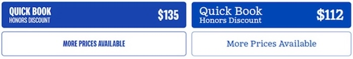
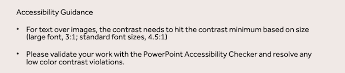

Hilton corporate and Hampton by Hilton have recently completed refreshes that modernize our visual brand identity. These updates also prioritize accessibility, enabling guests and team members to comfortably read our content and engage with our digital properties.
Accessibility goals for the Hampton refresh were to improve the contrast of the brand colors and legibility of the buttons and links for all guests, including those with visual, auditory, motor control, or cognitive impairments. The existing design, which featured a condensed font face, tight kerning, and uppercase text, posed readability challenges.
To address this issue, the One Hero Web Brand pod, including UI designers Maya Lindseth and Nick Adams proposed updates to the font styling, enhancing legibility without altering colors, hover states, or padding. This solution applies to all brand and property pages featuring Hampton-themed buttons and links.
Note the former treatment on the left and the refreshed treatment at right.

The integration of accessibility contrast guidelines into our new Hilton brand guidelines is a success story that highlights our involvement in numerous review cycles, ensuring every detail was meticulously examined. We also considered typography guidelines to enhance overall legibility and accessibility. The collaborative efforts of our team have resulted in a refreshed brand that is both visually appealing and inclusive for all.
A key element of our brand refresh is the update to our Hilton PowerPoint template. The objective was to ensure that every presentation reflects our new visual identity and maintains a consistent, professional look. This involved multiple sessions where we thoughtfully reviewed each slide to guarantee that all elements were in place.
Key considerations included:

This transformative process was guided by Mary Mastracci, Senior Manager, Global Enterprise Marketing. She played an integral role in bringing our team together and ensuring that every detail was accounted for. Her expertise and dedication were crucial in refining our corporate deck to align with our new visual identity.
While we've made significant strides in refining our corporate deck, we encourage everyone to remain vigilant. It is essential to review your content to ensure that color contrast and other accessibility features continue to meet our high standards. This is particularly important when working with white text over images, as changes in background visuals can impact readability.
By embracing these updates, we are not only enhancing our visual identity but also reinforcing our commitment to clear and effective communication. We look forward to seeing these improvements in action across all our presentations.
Get ready to celebrate World Down Syndrome Day (WDSD) on March 21 with a splash of color and a dash of whimsy! This year's theme, "Improve Our Support Systems," reminds us that everyone deserves the support they need to shine brightly in their communities.
Down syndrome, also known as Trisomy 21, is a genetic condition where a person has three copies of chromosome 21 instead of the usual two in each cell of their body. This can lead to intellectual disabilities, which vary from person to person. People with Down syndrome may also experience certain health conditions more frequently. But with the right support, they can lead fulfilling lives and be active members of their communities.
Support systems are the backbone of this year's theme. They help people with Down syndrome enjoy their rights and achieve their full potential. Whether it's making important life decisions, accessing justice, living independently, receiving education, obtaining healthcare, securing employment, participating in politics, or engaging in cultural and recreational activities, support systems make it all possible.
The Abilities Team Member Resource Group (ATMRG) plans to build awareness for WDSD by hosting events at Maple Court (our Europe regional office) and a global initiative to promote the virtual #Challenge21. The events at Maple Court are designed to engage employees and visitors, fostering a sense of community, support for people with Down syndrome, and showcasing Hilton's commitment to inclusion and diversity. #Challenge21 allows you to dream up any challenge you like, complete it, and earn a special medal. You could do 21 star jumps daily, bake 21 cupcakes for friends, or even try 21 keepie uppies. The possibilities are endless!
Speaking of socks, have you heard about ‘Lots of Socks’? This campaign encourages people to wear colorful, mismatched socks to spark conversations about Down syndrome. The idea is to highlight diversity and uniqueness, much like how socks come in various shapes, sizes, and designs. When someone asks about your funky socks, you can proudly say, ‘I'm wearing them to raise awareness of Down syndrome!’ This campaign celebrates diversity and uniqueness, just like how no two socks are the same. It's a fun way to highlight that everyone is unique and deserves to be included.
So, let's celebrate World Down Syndrome Day with a splash of color, a dash of whimsy, and a whole lot of support! Together, we can create a more inclusive world where everyone can thrive.
For this month's contest, we're celebrating the creativity inspired by World Down Syndrome Day (WDSD). Which occurs every March 21st. We invite our readers to submit a piece of creative work, whether a photograph or text, that represents World Down Syndrome Day, the Rock Your Socks Campaign, or people with Down syndrome. All participants will be entered into a drawing, with the winner receiving 3 pairs of socks to support ‘Rock Your Socks’ – a campaign that raises awareness by using mismatched socks to symbolize the karyotype of chromosomes. The winners of the drawing and their artwork will be featured in the next edition of Unlocking Accessibility.
Enter your submission for the World Down Syndrome Day contest.
Congratulations to William Naife, Mgr of Quality Engineering for Mobile Apps in Operations in the operations department, for winning last month’s contest and the Mr. Maple Plushie Bundle.
Here’s a couple of those trivia questions and answers – check out more at our Unlocking Accessibility SharePoint.
How long does it take to train a guide dog?
Answer: 18 to 24 months
Explanation: Most guide dog schools prefer to get their dogs out in the workforce by age 2 maximize their work life.
In the U.S., when is National Guide Dog Month?
Answer: September
Explanation: We Hope you will celebrate with us this coming September! 😊
Global Accessibility Awareness Day (GAAD), one of our team’s most significant events, will take place on May 13-15, 2025. This year’s theme is “Accessibility Across Pixels and Places.” We’re currently looking for volunteers for virtual and in-office activities. Volunteering is a unique opportunity to create a more accessible environment for all while aligning with Hilton's core values of diversity and inclusion.
By participating, you'll be at the forefront of promoting accessibility and inclusivity, making a difference in our community. It's part of a global effort to raise awareness about accessibility and ensure everyone has equal opportunities to enjoy the experiences we offer.
But that’s not all – GAAD is also a fun and engaging way to connect with others! Get ready for interactive activities that will teach you new things, spark meaningful conversations, and help you see accessibility from fresh perspectives. It’s an event where learning and fun meet. There’s something for everyone to enjoy.
Join us for GAAD and be part of learning, collaboration, and fun. Let’s come together to celebrate diversity, promote accessibility, and make a positive impact in our community. Reach out to Amanda Geier for more information on how you can help. We look forward to seeing you there!